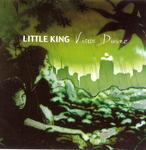

Home Artist links Label link

Little King - Virus Divine
| Artist: | Little King |
| Title: | Virus Divine |
| Label: | Unicorn Digital Inc. UNCR-5019 |
| Length(s): | 40 minutes |
| Year(s) of release: | 2005 |
| Month of review: | [10/2005] |
Line up
Ryan Rosoff - guitars, vocals
Wes Kahalekulu - drums, percussion
Shannon Brady - bass
Heather Coley - backing vocals on 1 and 6
Tracks
| 1) | All I Need | 4.49
|
| 2) | Narcissus And Echo | 3.49
|
| 3) | Peacemaker | 5.37
|
| 4) | Second Wind | 5.09
|
| 5) | Antibodies | 4.07
|
| 6) | Virus Divine | 6.03
|
| 7) | Paso Del Norte | 5.01
|
| 8) | Horsefeathers | 1.24
|
Summary
U.S. based Virus Divine has its first release on Unicorn. The album
is produced by Terry Brown (known for his work with Rush). I have not heard
any previous albums by the band. This is a concept piece by the way,
a story that connects to the Columbine high school tragedy.
The music
All I Need opens with strong rolling drums and rock guitars. The vocals
are difficult to describe. Rosoff sings whisperingly, and rather soft voiced.
The style can be likened to Rush, but Geddy seeks it much higher up.
Rosoff has more the voice of a singersongwriter, a bit of that intimacy.
Heather Coley does some backing vocals, on this song that lies somewhere
between the AOR of Boston (but less slick), and the melodic rock of Live,
with elements of Rush sprinkled throughout. Ending with acoustic guitar we
run right into
the compact Narcissus And Echo. As the previous song, this one rocks
really well with guitars resounding loudly and the drums nicely loud.
But the feel of the music is not prog, but maybe many don't think It Bites
feels like prog too (although I am certainly not saying that Little King
is anything like them)?
Peacemaker opens with strumming guitars and Rosoff bouncily singing along
in a somewhat whispering voice. The chorus has the right sense of
urgency. At the end, we get something akin to progmetal, alternated
with jangling acoustic guitar. Second Wind has a nice jangly
vocal melody. Rosoff shows that he can sound rowdy as well here, and
I guess I like him beter like that. But it is not something to have in
every song.
We are past halfway when we reach Antibodies. The style has not changed:
up-beat acoustic guitar alternated with rowdy rock guitars playing in a more
melodic style.
Virus Divine is both title track and the longest song on the album.
It has some furious, almost hardcore like vocal parts. Still, the main
reference point I can find is Rush.
Paso Del Norte is among the more acousticy songs, and thus is one of the
friendlier songs. The vocal melody falls a bit short in distinctiveness.
When the power comes in, it is Rush time again. We switch back and forth
between acoustic passages and electric ones, as usual.
Horsefeathers, finally, is a short track.
Conclusion
If this review is to be a measure of quality and progginess,
then I am afraid to say that one count, Little King falls short.
The music on this album is very much in the alt rock vein, say Live on
their Throwing Copper, but also with plenty of elements from Rush. The
guitars are on the average loud and noisy, making for a very full sound
spectrum in many places. At others, the acoustic guitar takes the lead.
Of course, progginess is not the only thing to be judged here, and I can say
that I did enjoy listening to the album. However, a warning can be given, because rightly did Rosoff keep the album length within limits: for a longer
album it becomes important to vary the vocabulary a bit more.
Rosoff does have a specific style for writing songs, so he does
developed his own identity, which I always regard as a good thing.
© Jurriaan Hage